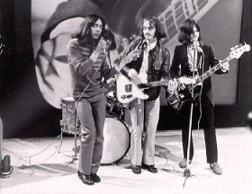

As time passes by memories fade , little facts enlarge, black and white merge
to gray, but you never know... maybe what you're going to read is the real...
Outsiders' History.
But first I would like to answer a question you may be asking yourself: what's
so special about these Outsiders anyway? That's a tough question, as tastes
are an opinion, but I'll try to explain: in the mid sixties many bands were
"digesting" their late 50's / early 60's influences forever transforming
the face of "pop" music. But while in the vast majority of the bands this
process was evident, when the Outsiders started recording they were already
a step further. Moreover, the Outsiders quickly developed a very personal
- and immediately recognizable - style. And, they never recorded a cover!
While I'm sure other examples must exist, I can't think of another sixties
band (that made any decent number of records) that managed that.
But let's go on with the history. Wally Tax, the Outsiders' singer, said
that he dreamed of the Outsiders in 1959 as a reincarnation of Buddy Holly
(remember, Holly died that February). In 1960, Jimmy Revon and the Outsiders
were born. This band already featured the definitive Outsiders' song writing
team: Wally Tax and Ronnie Splinter (who were only 12!). The "real" Outsiders
began playing together in 1964, the line-up consisting of: Wally Tax (born
in 1948, Voice), Ronnie Splinter (1948, Lead Guitar), Leendert "Buzz" Bush
(1947, Drums), Appie Ramers (1946, Bass), Tom Krabbendam (1948, Guitar).
In 1965, the Dutch beat-magazine Muziek Expres launched its own label and,
at the end of the year, released the first Outsiders single: "You Mistreat
Me /Sun's Going Down". "You Mistreat Me" is probably the reason why the Outsiders
were labeled as the "Pretty Things of Holland", even if they quickly outgrew
this comparison. The song is a very wild number and its "feel" is very
reminiscent of the Pretty Things' "Rosalyn", but with a difference (which
is one of the Outsiders' trademarks): Wally Tax doesn't shout!
The energy behind the Outsiders' music is often described as "latent violence"
and I couldn't agree more! The combination of Ronnie's bone-crunching riffs
and Wally's deep, calm and moody voice creates a contrast which charges the
listener up with a frustrating energy, desperate for release. The flip side
shows their slower, more "romantic" side and marks the emergence of another
Outsiders' trait: the ability to write GREAT ballads. Most of the garage
/ beat band of the sixties were able to write great "punk" songs, but their
slower numbers were often lame, good only to flirt at parties (well, they
weren't so bad after all....!). Instead, The Outsiders' ballads are so deep
and intense that they're almost disturbing, as Wally's soulful voice hits
you straight in the heart while Ronnie's guitar wrings your stomach.
In 1966 Muziek Expres published the band's second single: "Felt like I Wanted
To Cry / I Love Her Still, I Always Will". Again, an R'n'B stomper on side
A and a heartfelt ballad on side B. But, although being wonderful, these
singles were only an appetizer for the wonders to come.
At this point of their career the Outsiders were famed for being the most
violent band of the country (both musically and physically) and so were their
fans and followers, to the point that the band was banished from many clubs.
I don't know to what extent this is true, but The Outsiders were certainly
wild looking, especially because of their incredibly long hair. Again, I
think this fame damaged rather than helped them, as labels always cause the
real value of a band to be overlooked.
As their fame grew, The Outsiders started to draw interest from other record
labels. Later in 1966, they signed with Relax Records (a subsidiary of classical
music label Iramak) and Relax co-owner John B. Van Setten became their manager.
The relationship between the Outsiders and Van Setten wasn't the best possible
(Wally Tax later accused the manager of ripping the band off, but that's
common history in the sixties). Nevertheless, the band started a frantic
period of activity, releasing one album and seven singles between '66 and
'67 for the label.
The first Relax single is "Lying All The Time / Thinking About Today". The
A-side is a touching tale of broken love (the dominant theme in Wally's lyrics
of that period) which, despite the apparent banality ("Love is blind and
my love was too blind to see / Love is blind and you made a fool out of me
/ And then I fell for you 'cause I thought that you loved me too / but you
were lying, you were lying all the time"), is one of the most moving love
songs ever. The single peaked at #45 in the 1966 Dutch top 100 (which is
not bad at all considering that foreign bands outsold Dutch ones; the top
Dutch band, the Golden Earrings, peaked at #13, while Q65, another beat legend
from Holland, peaked at #35!) This 45, along with the following two ("Keep
On Trying / That's Your Problem" and "Touch / Ballad Of John B."), shows
The Outsiders at their best (and they were only 18!). "Keep On Trying" is
another wonderful slow number while "Touch" and "That's Your Problem" are
two classic examples of that "latent violence" I was writing about. These
songs are also the ones that led to the Outsiders' rediscovery in the mid-80s,
thanks to covers recorded by great bands like The Lyres and The Tell-Tale
Hearts.
1967 saw the release of the first Outsiders' album. This self- titled LP
has to be heard to be believed! Side A features five killer (and previously
unreleased) live tracks. The first song ("Story 16") consists of the same
slow, tormenting riff played over and over with Wally raucously singing and
playing harmonica, leading to a frantic finale. The rest of the side features
Wally back to his typical mood, a "latent violence" tour de force designed
to drive the listener mad! The studio side, again, is a series of classics,
alternating slow and faster-paced numbers. The same year the band released
4 singles the second of which, "Summer Is Here / Teach Me To Forget You",
reached the Dutch top ten.
While 1967 saw the band at the zenith of their success (they even had a huge
following in France), it also marked the beginning of their decline, despite
television promotion and the release of a second album (SONGBOOK, released
by Teenbeat magazine's label) consisting of a collection of songs already
published by Relax on 45s (and on the first album). At this point things
started mixing up. Appie Ramers and Tom Krabbendam quit (or were they fired?),
replaced by Frank Beek (Bass, Guitar and Organ). Even Ronnie Splinter left
the band for some weeks, while Wally Tax started a parallel solo career in
a totally different direction, clearly showing the strong weight Ronnie Splinter
had in their song writing collaboration. The (awful) picture on the SONGBOOK
cover already shows the band as a four piece.
In 1968, after a last Outsiders' single ("Cup Of Hot Coffee / Strange Things
Are Happening"), Relax closed down and Van Setten sold the band to Polydor.
Their first Polydor effort ("I Don't Care / You Remind Me") is "poppier"
and very modern sounding, yet it is another wonderful record. This single
also represents a landmark in the band's career: the music scene was changing
at a fast pace and the naivety of the mid-sixties was over. At the same time,
The Outsiders were maturing as musicians and needed to explore new directions,
focusing more on their artistic needs than on commercial goals.
In fact, as all their contemporaries, they fell victim of the "late 60's
virus": experimentation. But while many other bands produced boring, pretentious,
and useless records, The Outsiders came out with another amazing masterpiece,
their swan song: C.Q. This album has it all. Dominated by a creepy reverb,
it showcases all of The Outsiders' capabilities, featuring 13 wonderful songs
which must be savored as a whole. The opening song, "Misfit", is a real punch
in the stomach, and probably the toughest sounding Outsiders' song ever.
Tracks two and three bring a sudden change in atmosphere, with their weird
and scary feel. Track three, the title cut, in particular is the oddest song
of the album, depicting a man desperately trying to establish a radio contact
to report vital news ("Hello, this is the captain, ......, could I speak
to your leader please? Do you receive me? Do you receive me? Do you receive
me? DO YOU RECEIVE ME???? ), complete with white noises covering the words!
The rest of the album consists of ten jewels, alternating rocking songs with
gentler numbers, all dominated by a strange psychedelic feel. Some of the
the obvious instruments of that era are present: flute, balalaika, strange
percussion and various effects (no sitar or strings though!), but they are
never used inappropriately and the arrangements never distract from the songs.
The final result is a very modern album, way ahead of its time (as opposed
to many other albums of that era which now sound outdated).
The lyrics are more mature than in the previous recordings, as well. "Daddy
Died On Saturday" narrates the tale of a rich young girl and a poor boy who
are in love and want to marry. Impeded by the girl's father, they decide
to poison the old man and marry anyway. "Prison Song" is the story of a man
who comes out of prison and finds his woman with another man. Overwhelmed
by his emotions he shoots her and runs away in a confused state. "Prison
Song" may be the highlight of the album (along with "Misfit"). It is told
in the first person and makes the character's emotions come to life: the
tension as he approaches the prison door to exit, the overwhelming sensation
when he's finally free (underscored by actual street noises); the joy of
going back home to see his woman; the pain when he sees her with another
man and understands what's happened while he was in prison; the shot; the
heart pounding; and the despair of the escape.
C.Q took six months to finish and all the care the band put both in composing
and in recording it is evident, making it a near perfect album. ("Now we
take our time to record songs. A few years ago we used to rush in the studio
and cut a song as quickly as possible, then back home. That was it! The music
scene is changing fast and so are we" - Wally Tax). Of course, despite critical
acclaim, the album failed to sell, and the same was true of the featured
single: "Do You Feel Alright / Daddy Died On Saturday", published in early
1969. Later on, Wally Tax laid part of the blame on Polydor, declaring that
he felt that the Outsiders were deliberately put aside by the label in favor
of the Golden Earrings, who had to keep on being Polydor's #1 band.
Commercial failure and musical differences soon brought to the end of The
Outsiders. They kept on experimenting together for a while, but in the autumn
of 1969, Ronnie Splinter decided to quit his music career. Wally Tax, together
with Leendert Bush, started his new project, Tax Free.
But hey! There's no reason to be sad. Like The Remains used to sing: "All
Good Things Don't Have To End". The Outsiders may be gone, but their songs
are here to stay!
Written by Filippo Dulio, edited by Blair Buscareno. Originally appeared
on "The Teen Scene" #55, summer 1996